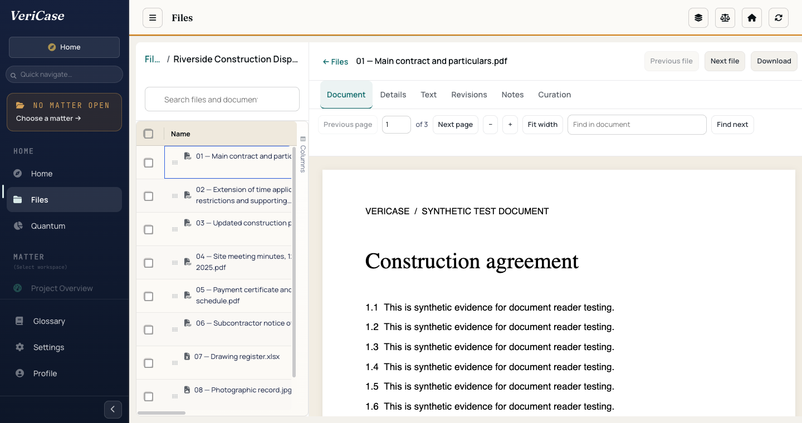
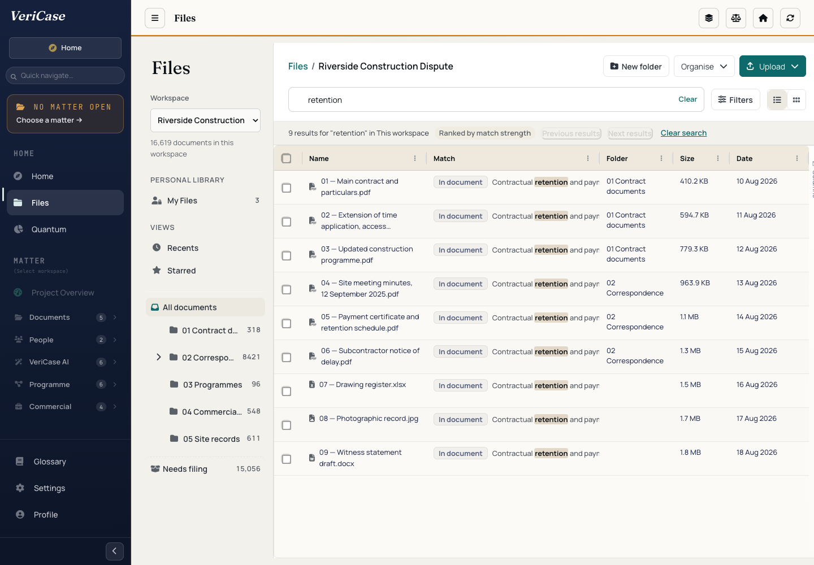
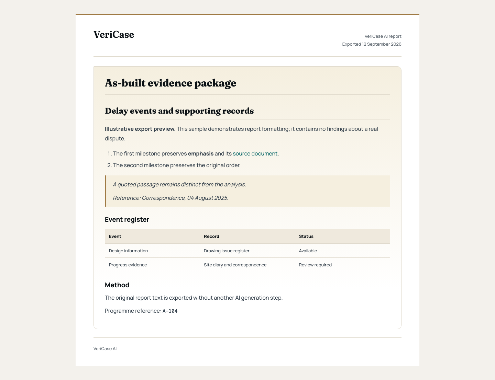
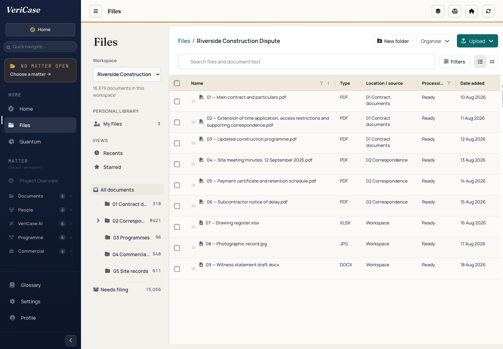

Actual product references
03 October 2026. Historical application QA views recovered from WR2.0. The records and report are synthetic. Original image bytes are unchanged; this sheet applies only CSS clipping and scaling. These views do not prove the latest deployed interface or an automatic sequence between separate tools.
PR-03 · Read the source

Preferred hero. Crop: 244, 76, 1196, 684. The historical sidebar stays outside the view, including during enlargement. Retain the visible synthetic-document label.
PR-02 · Find a record

Crop: 484, 76, 948, 766. The nine results are fixture records. Repeated snippets and displayed counts provide no evidence of corpus coverage or performance.
PR-04 · Review an export

Crop: 272, 194, 896, 606. The output demonstrates formatting. The visible source link targets an example URL. It is not the Research screen, a drafting editor, a real finding or proof of delay analysis.
PR-01 · Browse the files

Optional supporting view. Crop: 484, 76, 948, 725. Original programme-related filenames are retained as input records; they do not establish programme-analysis capability.